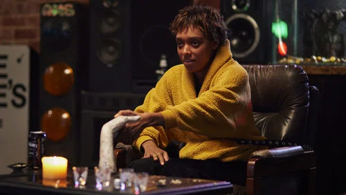

TALK TO ME
Talk to Me
🔍 この映画の怖さまとめ
😱 びっくり度
★★★★★
🩸 グロ度
★★★★★
🧠 精神ダメージ
★★★★★
🐾 動物の安否
⚠️ 注意
🎯 結論：SNSのノリで一線を越えていく"今っぽい怖さ"。びっくり・グロ・精神ダメージが三拍子そろったタイプ。
恐怖の性質（ネタバレなし）
この映画の怖さはいくつかの要素が組み合わさっています。それぞれを事前に知っておくことで、心の準備ができます。
びっくり度
★★★★★
突然の大音量や"急接近系"の驚かせ方はかなり多め。しかもただ「ワッ！」で終わらない。憑依した瞬間の顔つきや空気の変化が異様にリアルで、「今なんかヤバいもの入った…」という嫌なゾワゾワが強いタイプ。特に複数人で盛り上がりながら降霊遊びをしている序盤は、パーティ感と恐怖の距離が近すぎてかなり不穏。
グロ度
★★★★★
想像以上に痛い。血の量というより"人体の壊れ方"がかなり生々しい。特に中盤以降は「それ見せる!?」みたいな痛覚系描写が増えてくる。顔面・歯・頭部まわりのダメージ描写が強めなので、その辺が苦手な人は要注意。人間の身体なのに人間っぽく見えなくなる"憑依中の動き"も怖い。
精神ダメージ
★★★★★
かなり重め。単なる悪霊ホラーというより、「孤独」「喪失感」「依存」がテーマとしてずっと底に流れている。主人公のメンタルが削れていく過程がリアルで、観てる側も「これ止められないんだろうな…」とわかるのがしんどい。"本当に見えているのか？"が曖昧になる瞬間も多く、後半はかなり精神圧迫系。
日常侵食度
★★★★★
高め。儀式自体がシンプルだからこそ現実感が強い。TikTokノリ、友達同士の悪ふざけ、配信映え……全部が"今の若者文化"と地続きなので観終わったあとも妙にリアルに残る。暗い廃墟じゃなく、普通の家・普通のパーティで始まるのもかなり嫌。
🐾 動物の安否（重要）
⚠️ 注意
直接的にメイン被害ではないですが、不穏なシーンあり。動物系の描写に敏感な方は少し警戒推奨です。
🛡️ ビビリ攻略ガイド
これを知っておけば少し楽に観られます。タイムスタンプ付きで危険ポイントをご案内。
モトジロウのひとこと感想

「"絶対やっちゃダメな遊び"って、なんであんな楽しそうに見えるんだろうね…。前半ワイワイしてたのに、気づいたら全員の顔が死んでて普通に怖かった…。」
【ラスト】主人公ミアは自分が現実側に戻れたと思っていたが、実際には死亡していた。最後は"霊側"になった彼女が、別の誰かに呼び出される。
【真相】霊たちはミアの弱った精神状態につけ込み、彼女を孤立させていた。母親の幻影も本物ではなく、悪霊側の誘導だった可能性が高い。
【生存情報】主要キャラは大きな被害あり。精神的にも肉体的にもかなり重傷。
【後味】かなり悪い。「遊び半分で触ったものから戻れなくなる」タイプの救い薄めホラー。
向いてる人 / 向いてない人
✅ こんな人におすすめ
- ヘレディタリー系の精神圧迫ホラーが好き
- "現代SNS文化"の怖さが好き
- 痛覚系ホラーもいける
- 後味悪め歓迎
❌ こんな人は注意
- ジャンプスケアが苦手
- 歯や顔の損傷描写が無理
- メンタル落ちてる時に重い映画を観たくない
- 救いあるラストが好き
作品情報
| タイトル | TALK TO ME（Talk to Me） |
|---|---|
| 公開年 | 2023年 |
| 監督 | ダニー・フィリッポウ / マイケル・フィリッポウ |
| 主演 | ソフィー・ワイルド |
| 制作国 | オーストラリア |
| 上映時間 | 95分 |